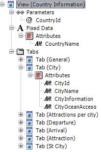

It defines a View web panel.

The link generated on the top right-hand corner of the View allows you to execute the Work With of the object that is currently being viewed.
Usually, the path followed to get to the View of any object is irrelevant. Since the entire application is interlinked, you don't always reach an object through the same path. This is why a link to the Work With of the viewed object is generated.
Parameters used to call the View.
Set of attributes presented in the Tabs. It's usually the Description Attribute property .
Defines the Tabs that will be presented. Usually, the first Tab is labeled 'General' and displays information related to the Transaction level. There is also a Tab for each subordinate table.
The following properties can be configured for each Tab:
- Page - Number of rows to be shown in the grid
- Tab type. The available types are the following:
- Tabular. Data will be shown in text format. The General tab is tabular.
- Grid. Usually this type of tab is used to present subordinate tables.
- UserDefined. In this case a Web component will be called. This Web component is created by the developer and will be called with the same parameters of the View.
- Condition. It indicates whether the Tab will be shown or not, depending on the condition. For instance, in this property you can write CustomerType = 8 and the tab will be shown only on this case. Also, you can use procedures (which are called using udp) as long as these procedures return a boolean value.
General Tab
This tab displays the text data of the table. By default, it is Type = Tabular and contains the following data:
- Attributes - It indicates the attributes to be shown within it
- Actions - Actions executed on the database that can be performed with the information shown
Related Tabs
The rest of the Tabs display information corresponding to the tables related to the main table. By default, they are Type = Grid and have the following data:
- Name of the Transaction whose data will be shown
- Parameters to be used to call the Transaction
- Modes to be enabled for these parameters. In the InsertCondition, UpdateCondition, DeleteCondition and DisplayCondition properties, you can enter the condition that indicates whether the Mode will be shown or not. In these conditions you can use procedures (which are called using udp) as long as these procedures return a boolean value.
This structure of interrelated objects allows you to maintain consistency in the data viewed in the Tabs (browsing through the Transactions) after executing any action on any currently viewed data.
|